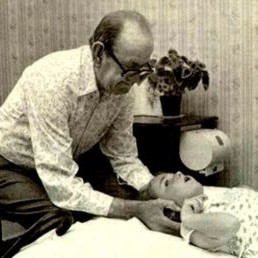

BOWEN-NAGYKANIZSA
Reichardt Angelika
Reichardt Angelika
Reichardt Angelika |
Reichardt Angelika vagyok, Nagykanizsán élek. Immár 39 éve a tanári pályán tevékenykedem. A Bowen technikával nemrégiben ismerkedtem meg, amikor a családban halmozódó egészségügyi problémákra próbáltam megoldást találni. A holisztikus, alternatív gyógyászat mindig is érdeklődésem középpontjában állt, ezért kezdtem ilyen irányban kutatni és rábukkantam a Bowen technikára. Én magam is kipróbáltam, s az eredmény végleg meggyőzött, hogy ez az én utam. Úgy döntöttem, hogy beiratkozom egy Bowen tanfolyamra és jelenleg képzett alkalmazóként a nagykanizsai Richter-Med Egészségmegőrző Központban vagyok elérhető. Hiszem és vallom, hogy testi-lelki gyógyulásunk elérhető, ha harmóniában vagyunk önmagunkkal. Ebben segít a Bowen. |
Reichardt Angelika vagyok, Nagykanizsán élek. Immár 39 éve a tanári pályán tevékenykedem.
A Bowen technikával nemrégiben ismerkedtem meg, amikor a családban halmozódó egészségügyi problémákra próbáltam megoldást találni. A holisztikus, alternatív gyógyászat mindig is érdeklődésem középpontjában állt, ezért kezdtem ilyen irányban kutatni és rábukkantam a Bowen technikára. Én magam is kipróbáltam, s az eredmény végleg meggyőzött, hogy ez az én utam. Úgy döntöttem, hogy beiratkozom egy Bowen tanfolyamra és jelenleg képzett alkalmazóként a nagykanizsai Richter-Med Egészségmegőrző Központban vagyok elérhető.
Hiszem és vallom, hogy testi-lelki gyógyulásunk elérhető, ha harmóniában vagyunk önmagunkkal.
Ebben segít a Bowen.
|  |
A bowen eredeteThomas A. Bowen (1916-1982) egy kivételes képességekkel rendelkező, az emberi test szemléletét és kezelését illetően mély belső bölcsességgel megáldott minimalista terapeuta volt az ausztráliai Geelongban. Tudását autodidaktaként szerezte és fejlesztette, létrehozva egy egyedülálló és független kezelési rendszert, amit ma Bowen technika néven emleget az egész világ.Bowen az 1950-es évek közepétől egészen haláláig fejlesztette az általa felismert és alkalmazott módszert. Kiváló megfigyelőképességének és különösen jó intuíciójának köszönhetően néhány egyszerű mozdulattal képes volt segíteni a környezetében lévők legkülönbözőbb egészségi problémáin. |
Alkalmazás és vezérelvA Bowen Technika lényege a szervezet öngyógyító képességének helyreállítása. Nem betegségeket kezelünk, hanem az egész emberre fókuszálva, feszültségállapotokat közömbösítünk a testben.A kezelés a test meghatározott pontjain történő precízen elvégzett lágy kötőszöveti fogások sorozatából áll. A fogássorozat javítja a szervezet vér- és nyirokkeringését, a tápanyagok felszívódását és a méregtelenítés hatékonyságát. A Bowen Technika minden életkorban alkalmazható, legyen szó idősekről, újszülöttekről, várandós mamákról vagy profi sportolókról. Kiválóan alkalmazható akut, de akár hosszú évek óta fennálló krónikus állapotok esetén is. |
|
Néhány alkalmazási terület
|
| Felnőtt kezelés | első alkalom: 12.000,- Ft | majd 10.000.- Ft / alkalom |
| Nyugdíjasok kezelése | 8000.- Ft / alkalom |
| Gyermekek kezelése | 7000.- Ft / alkalom |
| Az aktuális akciókról a facebook oldalamon tájékozódhat | |
KapcsolatTovábbi információért hívjon vagy írjon az alábbi elérhetőségeken, vagy keresse fel Facebook oldalamat. |
Reichardt Angelika
|
 06 70 316 9145
06 70 316 9145 Nagykanizsa
Nagykanizsa vargangi@gmail.com
vargangi@gmail.com